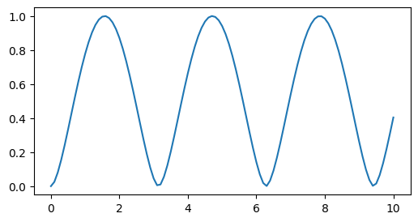

This notebook can be found on github
Entanglement of Two Qubits
Given a system of two qubits (two spin-1/2 particles) that are initially in a separable state (product state), it is necessary to apply a non-local operation in order to create entanglement between the qubits. We can do this by evolving the system with a non-local Hamiltonian, that will then periodically generate entanglement.
Consider two qubits initially in the state
$|\psi_0\rangle = |0\rangle \otimes |1\rangle = |\downarrow\rangle \otimes |\uparrow\rangle.$
If we compute the time evolution of this state with the Hamiltonian
$H = \Omega\left(\sigma^+\otimes \sigma^- + \sigma^-\otimes\sigma^+\right),$
we will see that entanglement is created periodically. The Von Neumann entropy of the reduced density matrix of one of the sub-systems will serve as the measure of the two-qubit entanglement. It is defined as
$S(\rho_\mathrm{red}) = -\mathrm{tr}\left(\rho_\mathrm{red}\log(\rho_\mathrm{red})\right) = -\sum_n\lambda_n\log(\lambda_n),$
where $\lambda_n$ is the $n$th eigenvalue of $\rho_\mathrm{red}$, $\log$ is the natural logarithm and we define $\log(0)\equiv 0$. In our case the reduced density matrix is
$\rho_\mathrm{red} = \mathrm{tr}_{1,2}(\rho),$
where $\rho$ is the density matrix of the entire system and $\mathrm{tr}_{1,2}$ is the partial trace over the first or second qubit. As always, we start by importing the required libraries and define the necessary paramters.
using QuantumOpticsusing PyPlot# ParametersΩ = 0.5t = [0:0.1:10;]Then we proceed to define the Qubit basis as spin-1/2 basis and write our Hamiltonian accordingly.
# Hamiltonianb = SpinBasis(1//2)H = Ω*(sigmap(b) ⊗ sigmam(b) + sigmam(b) ⊗ sigmap(b))Defining the initial state, we can evolve using a Schrödinger equation since there is no incoherent process present.
ψ₀ = spindown(b) ⊗ spinup(b)tout, ψₜ = timeevolution.schroedinger(t, ψ₀, H)As explained above, we need the reduced density matrix of one of the Qubits. We therefore take the partial trace and compute the Von Neumann entropy using the implemented function entropy_vn. Note, that the maximal VN entropy is $\log(2)$. Here, we rescale it by this factor, such that $0\leq S \leq 1$.
# Reduced density matrixρ_red = [ptrace(ψ ⊗ dagger(ψ), 1) for ψ=ψₜ]S = [entropy_vn(ρ)/log(2) for ρ=ρ_red]Finally, we plot the result.
figure(figsize=(6, 3))plot(tout, S)/tmp/tmp.cwuoyETdJU/lib/python3.10/site-packages/matplotlib/cbook.py:1699: ComplexWarning: Casting complex values to real discards the imaginary part
return math.isfinite(val)
/tmp/tmp.cwuoyETdJU/lib/python3.10/site-packages/matplotlib/cbook.py:1345: ComplexWarning: Casting complex values to real discards the imaginary part
return np.asarray(x, float)